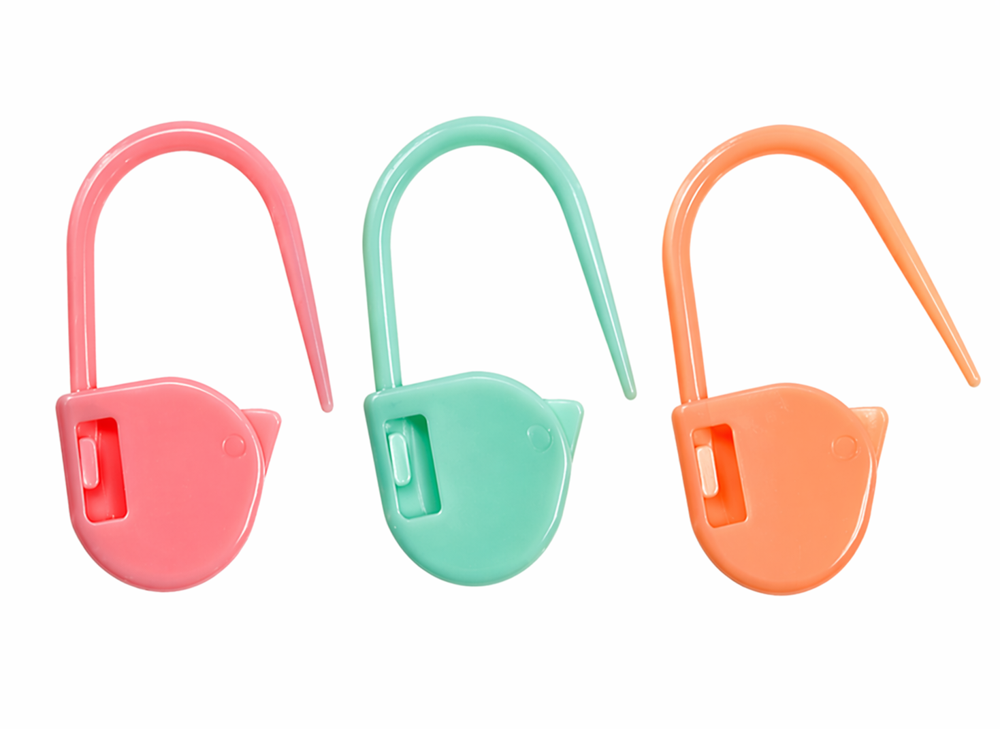
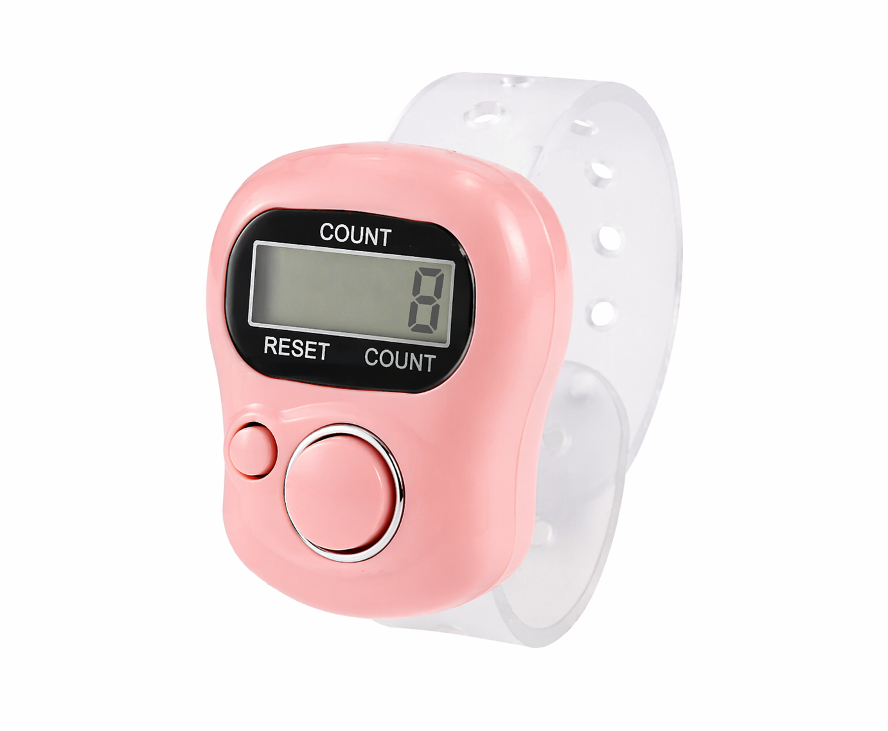
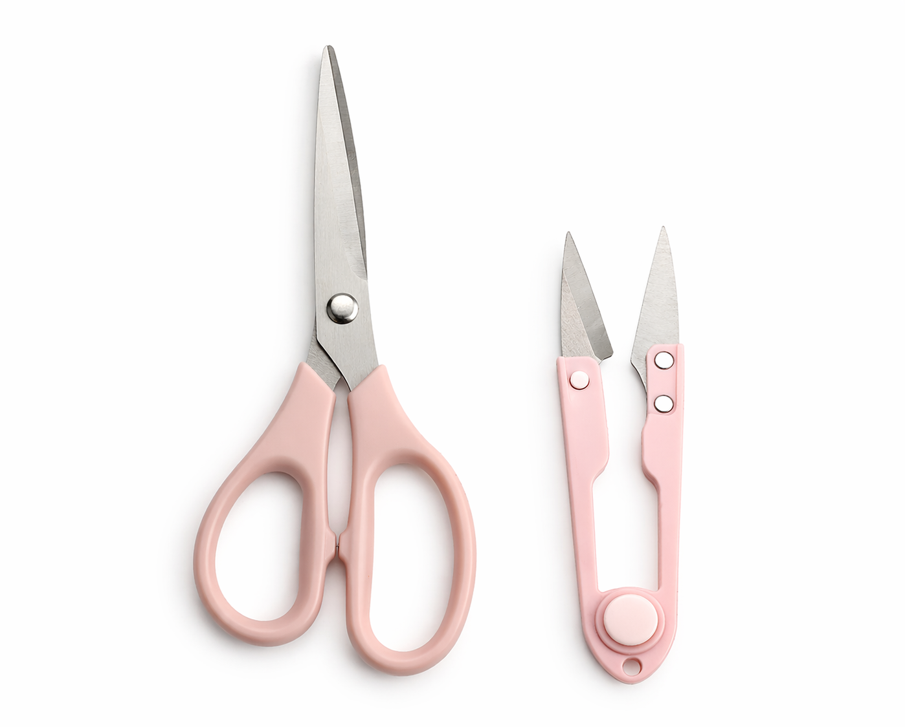
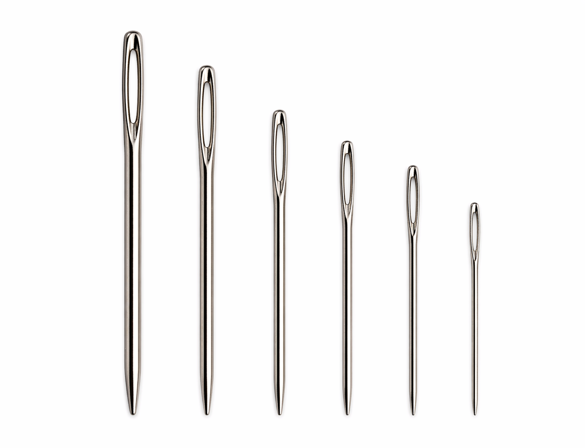

Other Tools
Content

Stitch Markers
Used to mark stitches, increases/decreases, or pattern repeats to prevent mistakes.

Row Counter
Helps track rows or rounds.

Yarn Scissors
Small, sharp scissors for clean and precise cutting.

Tapestry Needle
Used for weaving in ends and sewing pieces together to finish crochet projects.